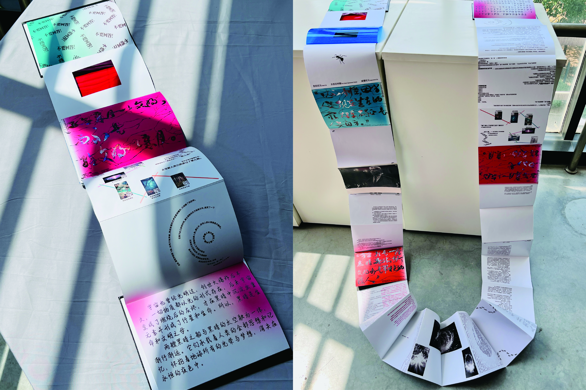

The Three-Body Problem Re-Design



Background
This project begins with selected textual scenes from The Three-Body Problem and explores how science fiction reading can be extended beyond plain text through visual and material design.
Problem
Science fiction concepts and scenes are often abstract, dense, and difficult to grasp through text alone. This can make the reading experience feel distant or hard to visualize.
Approach
This project translates selected textual scenes into visual storytelling through abstract graphics and light-transmitting materials. By turning textual content into visual and spatial reading experiences, it makes science fiction concepts more understandable and perceptible.